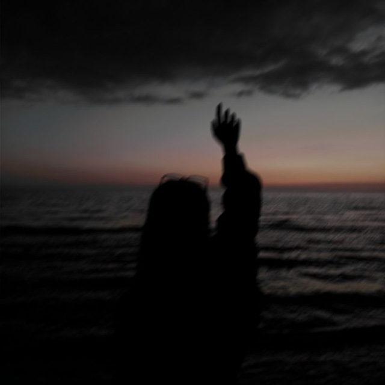
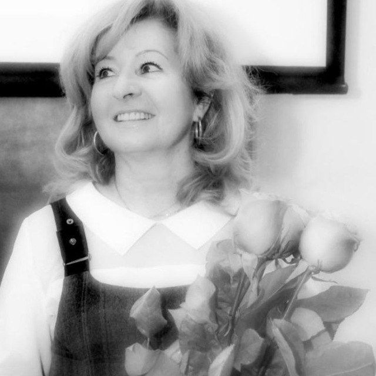

Ваня - наш технический специалист, один из организаторов и руководителей. Довольно закрытая личность перед большинством людей. Информация о нём не разглашается
Ваня - наш технический специалист, один из организаторов и руководителей. Довольно закрытая личность перед большинством людей. Информация о нём не разглашается

Яна - одна из руководителей нашего клуба. Отвественно относится к организации мероприятий, приглашению на них людей и впринципе во всех ключевых моментах

Лилия Викторовна - Основатель нашего Библиокафе. Человек, от которого веет позитивом. Так же отвественно относится к организации мероприятий, руководит всем.